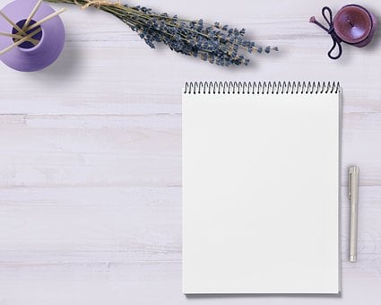
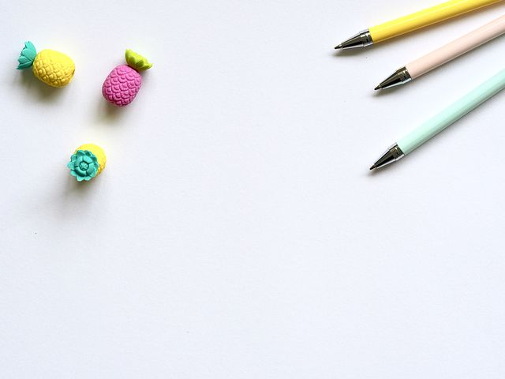
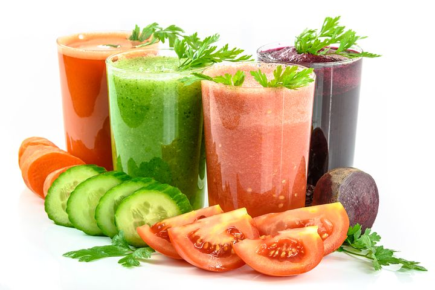

BLOG 1
Blog 1 27/10/21
Looking for an easy and unexpected way to build your personal or professional brand? Consider custom notepads featuring your name and logo. They can convey confidence and professionalism during meetings with clients – or even just add a fun touch to your day to day. And with 50 pages of acid-free paper, you’ll have plenty of space to jot things down. You can even choose between a cardboard reserve backing (good for notepads that will be used on desks or flat surfaces) or a magnetic backing (great to add to a fridge or filing cabinet).
BLOG 2
Blog 2 17/09/21
Looking for an easy and unexpected way to build your personal or professional brand? Consider custom notepads featuring your name and logo. They can convey confidence and professionalism during meetings with clients – or even just add a fun touch to your day to day. And with 50 pages of acid-free paper, you’ll have plenty of space to jot things down. You can even choose between a cardboard reserve backing (good for notepads that will be used on desks or flat surfaces) or a magnetic backing (great to add to a fridge or filing cabinet).
BLOG 3
Blog 3 14/07/21
Looking for an easy and unexpected way to build your personal or professional brand? Consider custom notepads featuring your name and logo. They can convey confidence and professionalism during meetings with clients – or even just add a fun touch to your day to day. And with 50 pages of acid-free paper, you’ll have plenty of space to jot things down. You can even choose between a cardboard reserve backing (good for notepads that will be used on desks or flat surfaces) or a magnetic backing (great to add to a fridge or filing cabinet).
BLOG 4
Blog 4 12/05/21
Looking for an easy and unexpected way to build your personal or professional brand? Consider custom notepads featuring your name and logo. They can convey confidence and professionalism during meetings with clients – or even just add a fun touch to your day to day. And with 50 pages of acid-free paper, you’ll have plenty of space to jot things down. You can even choose between a cardboard reserve backing (good for notepads that will be used on desks or flat surfaces) or a magnetic backing (great to add to a fridge or filing cabinet).
BLOG 5
Blog 5 12/05/21
Looking for an easy and unexpected way to build your personal or professional brand? Consider custom notepads featuring your name and logo. They can convey confidence and professionalism during meetings with clients – or even just add a fun touch to your day to day. And with 50 pages of acid-free paper, you’ll have plenty of space to jot things down. You can even choose between a cardboard reserve backing (good for notepads that will be used on desks or flat surfaces) or a magnetic backing (great to add to a fridge or filing cabinet).
Popular post
Follow me
Follow me on my GitHub